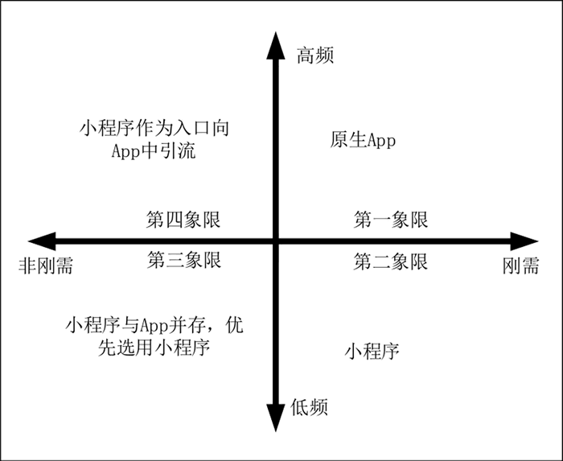

首页 > 编程笔记
微信小程序简介（非常详细）
微信小程序是一种新兴的应用程序，它与传统的 App 相比有很大区别，它是一种跨平台的应用程序，不区分 Android 版本与 iOS 版本，具有更好的移植性和更快的开发效率。
目前手机上的 App 琳琅满目，同类型的应用也比比皆是。在日常生活中，一些应用软件在最初下载时使用频率会高一点，随着时间的推移，这些软件的使用频率会逐渐降低，有时几周都不会使用。这些使用频率较低的应用软件一直占用用户手机的存储空间，造成了手机内存浪费。
一些用户为了避免这种内存浪费的情况发生，对于使用频率较低的软件会在需要使用时进行下载，使用完毕后就删除，这种方式减少了手机内存的浪费，但是在应用下载过程中会消耗时间与流量。
那么是否有一种更好的方式来解决这种现象呢？答案是：使用小程序。小程序具有无须安装、即开即用、不会额外占用用户手机内存的特点，它可以完美解决我们日常生活中低频率软件的内存占用问题。
微信小程序简称小程序，英文名为 Wechat Mini Program。它是一种依赖微信环境的跨平台应用程序，用户无须下载安装相应的小程序，点开即可使用，使用完毕退出即可，无须卸载，也不会额外占用手机内存。并且同一版本的小程序，在 Android 与 iOS 上都能良好运行，可以降低开发成本，提高开发效率。
2015 年初，微信团队对拍摄、录音、语音识别、二维码、地图、支付、分享、卡券等几十个 API 进行整理，发布了一整套的网页开发工具包，也被称为 JS-SDK，供所有开发者使用，使一些外部开发者也能够方便使用微信的原生功能，这就是小程序的雏形。
2016 年 1 月 11 日，“微信之父”张小龙对微信功能进行分析，提出了“一切以用户价值为依据”、“让创造体现价值”、“让用户用完即走”、“让商业化存在于无形之中”的四大价值观。也指出了越来越多产品采用公众号方式实现面临的问题，虽然公众号具有开发方便、获取用户和传播成本低等特点，但是公众号拆分出的服务号并不能很好地解决服务所面临的问题，因此需要探索一种全新形态的应用，也就是微信小程序。
2016 年 9 月 21 日，微信小程序开始内测，在微信生态中，微信小程序“用完即走”的模式引发广泛关注，吸引了大批开发者参与测试。
2017 年 1 月 9 日，微信小程序测试结束，首批微信小程序正式上线运营，用户可以通过微信小程序体验相应的服务。
2017 年 12 月 28 日，微信更新的 6.6.1 版本中开放了小游戏程序，作为其中代表的“跳一跳”小程序，以游戏的方式引起了众多关注，收到了许多用户的好评，由此确定小游戏是小程序的另一种发展形态。
随着小程序版本的更新与优化，先后增加了小程序投诉、收藏与分享、广告、功能服务搜索、后台数据分析与管理等功能，使得第三方很容易开发出一款功能完善的小程序。
时至今日，小程序因为使用简便、开发成本低等特点，已经成为商家应用的首选，各种各样的小程序为人们的衣食住行提供服务。
微信小程序具有的这些特征，使得越来越多的商户和产品加入到小程序的队伍中，小程序同传统的 App 相比既有优势也有劣势，它们之间具体的差异如下表所示。
小程序目前虽然已经拥有丰富的产品应用，具备海量的用户基数。但是小程序简单方便的设计理念和体量限制，使得小程序不能像 App 一样具有完善丰富的功能，而且 App 在某些方面能够为用户提供更好的使用体验。
因此小程序不能完全替代 App，它们之间不仅仅是竞争关系，还具有补充关系。对于功能简单、快进快出场景下的低频应用，采用小程序的方式是非常明智的，不仅可以降低开发难度、节省开发成本、提高开发效率，也可以减轻用户的使用负担，用户无须进行安装与下载操作，只需使用小程序提供的核心功能即可。对于一些高频、功能复杂的应用，使用小程序可能无法实现应用中的复杂功能，给用户带来一个较差的使用体验，面对这种情况，应用的核心功能应通过 App 方式实现，小程序用来作为一个引流入口，将微信的用户流量引入到 App 中。
小程序与 App 在不同的场景有不同的表现，目前小程序与 App 主流的应用场景如下图所示。
1) 第一象限：用户刚需且高频使用的应用
这个象限中基本都是行业内的巨头，需要使用 App 来为用户提供丰富的功能和高品质的用户体验。例如，购物类（淘宝、京东等）、出行类（百度地图、高德地图等）、支付类（支付宝、微信支付、各大银行支付）、社交类（微信、QQ 等）。
2) 第二象限：用户刚需但是低频使用的应用
这个象限中包含大量的服务类产品，例如旅游、票务、教育、医疗等。对这些应用，用户可能使用过一次就不再使用，或者间隔很长时间才会使用一次。这类应用使用 App 方式实现，不仅开发复杂，成本较高，用户的自然增长也较慢，需要花费大量的人力、物力进行推广宣传。使用小程序的方式实现，开发简便，成本低，可以借助微信的用户流量进行推广宣传，非常适合创业公司或者小规模公司产品的试错，提升产品竞争力，提高产品成功率。
3) 第三象限：用户非刚需且低频使用的应用
这个象限中大多是一些小众产品，一般是出于情怀的个人兴趣产品和工具产品，用户普遍较少，收益较低，基本不作为商业产品。这一类型的产品对于具有产品设计与开发能力的企业或公司可以考虑App开发。但是对于不具备产品设计与开发能力的公司应当优先考虑小程序开发。
4) 第四象限：用户非刚需但会高频使用的应用
这个象限中大多是一些休闲娱乐类的应用，这些应用通常功能比较复杂，但不是用户刚需的，使用这些应用的用户使用频率会比较高。其中的代表应用：抖音、快手、修图软件、休闲游戏等。小程序不能完美实现这些应用功能，但是可以作为一个引流入口，将一些微信用户引流到各自的平台中，增加 App 的用户量。
2020年，微信小程序数量已经突破 380 万，日均活跃用户超过 4 亿，覆盖超过 200 个细分行业。并且腾讯一直在和高校教育机构合作，大力推广微信小程序进入大学课堂，越来越多的学生开始学习微信小程序的相关知识，参与到小程序的开发。
目前手机上的 App 琳琅满目，同类型的应用也比比皆是。在日常生活中，一些应用软件在最初下载时使用频率会高一点，随着时间的推移，这些软件的使用频率会逐渐降低，有时几周都不会使用。这些使用频率较低的应用软件一直占用用户手机的存储空间，造成了手机内存浪费。
一些用户为了避免这种内存浪费的情况发生，对于使用频率较低的软件会在需要使用时进行下载，使用完毕后就删除，这种方式减少了手机内存的浪费，但是在应用下载过程中会消耗时间与流量。
那么是否有一种更好的方式来解决这种现象呢？答案是：使用小程序。小程序具有无须安装、即开即用、不会额外占用用户手机内存的特点，它可以完美解决我们日常生活中低频率软件的内存占用问题。
微信小程序简称小程序，英文名为 Wechat Mini Program。它是一种依赖微信环境的跨平台应用程序，用户无须下载安装相应的小程序，点开即可使用，使用完毕退出即可，无须卸载，也不会额外占用手机内存。并且同一版本的小程序，在 Android 与 iOS 上都能良好运行，可以降低开发成本，提高开发效率。
小程序的发展历程
微信小程序最初并不完善，也没有对外开放，它仅是微信团队内部进行一些业务处理的 JS API，一些外部开发者发现这些相关的 API 后，按照相应的规则使用这些接口，随着时间的推移与外部开发者数量的增多，这些 API 形成了一种业内默认的规则与标准。2015 年初，微信团队对拍摄、录音、语音识别、二维码、地图、支付、分享、卡券等几十个 API 进行整理，发布了一整套的网页开发工具包，也被称为 JS-SDK，供所有开发者使用，使一些外部开发者也能够方便使用微信的原生功能，这就是小程序的雏形。
2016 年 1 月 11 日，“微信之父”张小龙对微信功能进行分析，提出了“一切以用户价值为依据”、“让创造体现价值”、“让用户用完即走”、“让商业化存在于无形之中”的四大价值观。也指出了越来越多产品采用公众号方式实现面临的问题，虽然公众号具有开发方便、获取用户和传播成本低等特点，但是公众号拆分出的服务号并不能很好地解决服务所面临的问题，因此需要探索一种全新形态的应用，也就是微信小程序。
2016 年 9 月 21 日，微信小程序开始内测，在微信生态中，微信小程序“用完即走”的模式引发广泛关注，吸引了大批开发者参与测试。
2017 年 1 月 9 日，微信小程序测试结束，首批微信小程序正式上线运营，用户可以通过微信小程序体验相应的服务。
2017 年 12 月 28 日，微信更新的 6.6.1 版本中开放了小游戏程序，作为其中代表的“跳一跳”小程序，以游戏的方式引起了众多关注，收到了许多用户的好评，由此确定小游戏是小程序的另一种发展形态。
随着小程序版本的更新与优化，先后增加了小程序投诉、收藏与分享、广告、功能服务搜索、后台数据分析与管理等功能，使得第三方很容易开发出一款功能完善的小程序。
时至今日，小程序因为使用简便、开发成本低等特点，已经成为商家应用的首选，各种各样的小程序为人们的衣食住行提供服务。
小程序的特征与应用场景
以下是“微信之父”张小龙对微信小程序的定义：“无须下载、安装触手可及，用完即走。”小程序依赖于微信生态，因此除了上面的一些特点以外，还天然具备一些其他优势，例如引流、唯一性、入口众多、便于推广等：- 引流：微信小程序上线后可以免费开通附近的小程序，微信用户使用附近小程序功能查找小程序时，会将附近 5 千米内的小程序按照距离排名。
- 唯一性：微信小程序的名称与域名相似，具有唯一性，一个小程序名称创建后，其他小程序不能使用相同的名称，微信用户可以通过搜索小程序名称进入小程序。
- 入口众多：微信小程序入口目前有 60 多种，其中常用的入口有以下几种：微信聊天界面下拉、附近的小程序、微信用户分享、小程序码、公众号关联、客服消息等。
- 便于推广：微信小程序在线上可以通过用户分享、广告、结合公众号等方式进行推广。在线下可以借助二维码或者小程序码的方式进行推广，从而实现线上、线下同步推广。
微信小程序具有的这些特征，使得越来越多的商户和产品加入到小程序的队伍中，小程序同传统的 App 相比既有优势也有劣势，它们之间具体的差异如下表所示。
| 对比项 | 小程序 | App |
|---|---|---|
| 安装方式 | 无须下载安装 | 需要下载安装 |
| 应用占用空间 | 极小，基本可以忽略不计 | —般占用空间较大 |
| 开发方式 | 只需开发一个版本 | 需要开发 Android 与 iOS 两个版本 |
| 开发成本 | 低 | 高 |
| 推广 | 借助微信流量，推广方便，成本低 | 原生流量，推广困难，成本高 |
| 应用功能 | 简单 | 丰富 |
| 用户体验 | —般 | 较好 |
小程序目前虽然已经拥有丰富的产品应用，具备海量的用户基数。但是小程序简单方便的设计理念和体量限制，使得小程序不能像 App 一样具有完善丰富的功能，而且 App 在某些方面能够为用户提供更好的使用体验。
因此小程序不能完全替代 App，它们之间不仅仅是竞争关系，还具有补充关系。对于功能简单、快进快出场景下的低频应用，采用小程序的方式是非常明智的，不仅可以降低开发难度、节省开发成本、提高开发效率，也可以减轻用户的使用负担，用户无须进行安装与下载操作，只需使用小程序提供的核心功能即可。对于一些高频、功能复杂的应用，使用小程序可能无法实现应用中的复杂功能，给用户带来一个较差的使用体验，面对这种情况，应用的核心功能应通过 App 方式实现，小程序用来作为一个引流入口，将微信的用户流量引入到 App 中。
小程序与 App 在不同的场景有不同的表现，目前小程序与 App 主流的应用场景如下图所示。

1) 第一象限：用户刚需且高频使用的应用
这个象限中基本都是行业内的巨头，需要使用 App 来为用户提供丰富的功能和高品质的用户体验。例如，购物类（淘宝、京东等）、出行类（百度地图、高德地图等）、支付类（支付宝、微信支付、各大银行支付）、社交类（微信、QQ 等）。
2) 第二象限：用户刚需但是低频使用的应用
这个象限中包含大量的服务类产品，例如旅游、票务、教育、医疗等。对这些应用，用户可能使用过一次就不再使用，或者间隔很长时间才会使用一次。这类应用使用 App 方式实现，不仅开发复杂，成本较高，用户的自然增长也较慢，需要花费大量的人力、物力进行推广宣传。使用小程序的方式实现，开发简便，成本低，可以借助微信的用户流量进行推广宣传，非常适合创业公司或者小规模公司产品的试错，提升产品竞争力，提高产品成功率。
3) 第三象限：用户非刚需且低频使用的应用
这个象限中大多是一些小众产品，一般是出于情怀的个人兴趣产品和工具产品，用户普遍较少，收益较低，基本不作为商业产品。这一类型的产品对于具有产品设计与开发能力的企业或公司可以考虑App开发。但是对于不具备产品设计与开发能力的公司应当优先考虑小程序开发。
4) 第四象限：用户非刚需但会高频使用的应用
这个象限中大多是一些休闲娱乐类的应用，这些应用通常功能比较复杂，但不是用户刚需的，使用这些应用的用户使用频率会比较高。其中的代表应用：抖音、快手、修图软件、休闲游戏等。小程序不能完美实现这些应用功能，但是可以作为一个引流入口，将一些微信用户引流到各自的平台中，增加 App 的用户量。
小程序的发展前景
自从微信小程序正式发布以后，互联网巨头 BAT 中的其余两家阿里巴巴和百度也先后发布各自版本的小程序，进行小程序的布局与规划。随着小程序的发展，企业的需求量也在不断增加，越来越多企业投入到小程序开发与建设的浪潮中，微信庞大的用户基数也为后期小程序的推广提供了便利。2020年，微信小程序数量已经突破 380 万，日均活跃用户超过 4 亿，覆盖超过 200 个细分行业。并且腾讯一直在和高校教育机构合作，大力推广微信小程序进入大学课堂，越来越多的学生开始学习微信小程序的相关知识，参与到小程序的开发。
关注公众号「站长严长生」，在手机上阅读所有教程，随时随地都能学习。内含一款搜索神器，免费下载全网书籍和视频。

微信扫码关注公众号